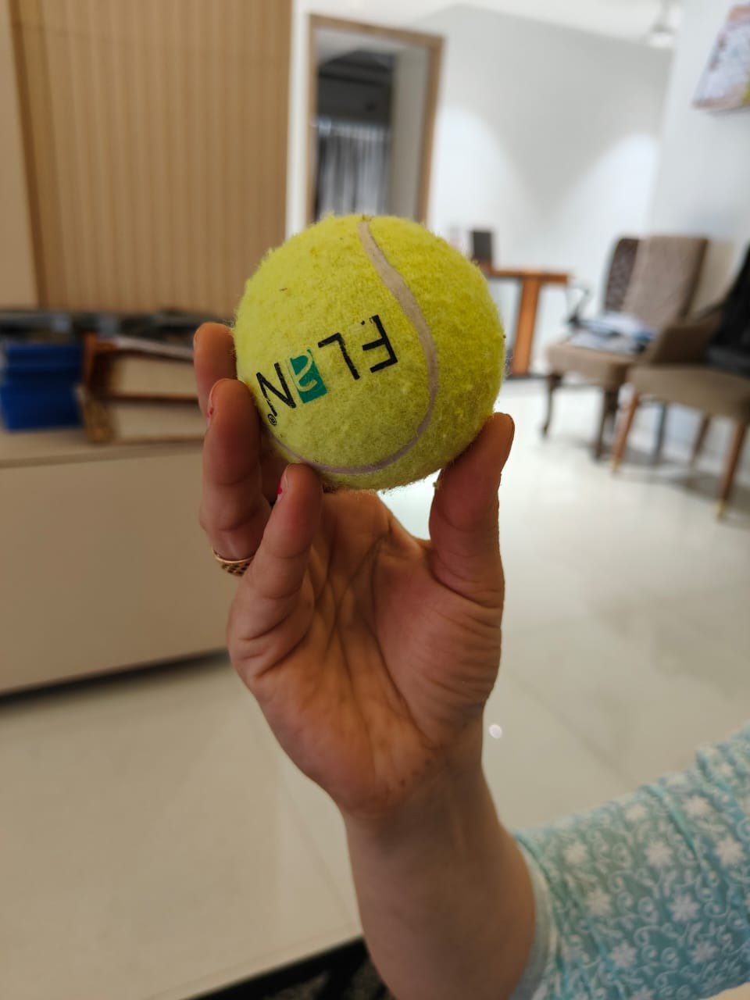
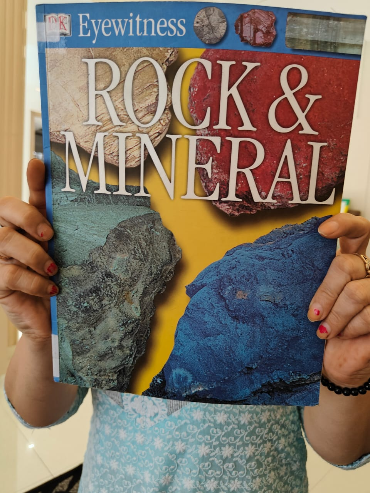
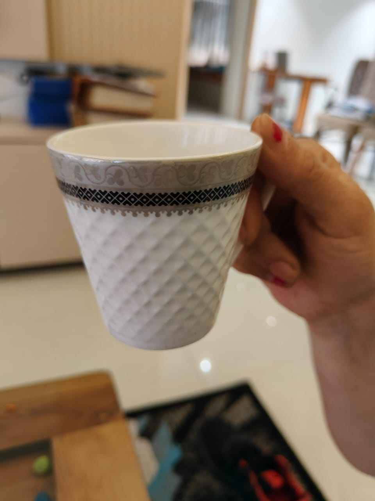
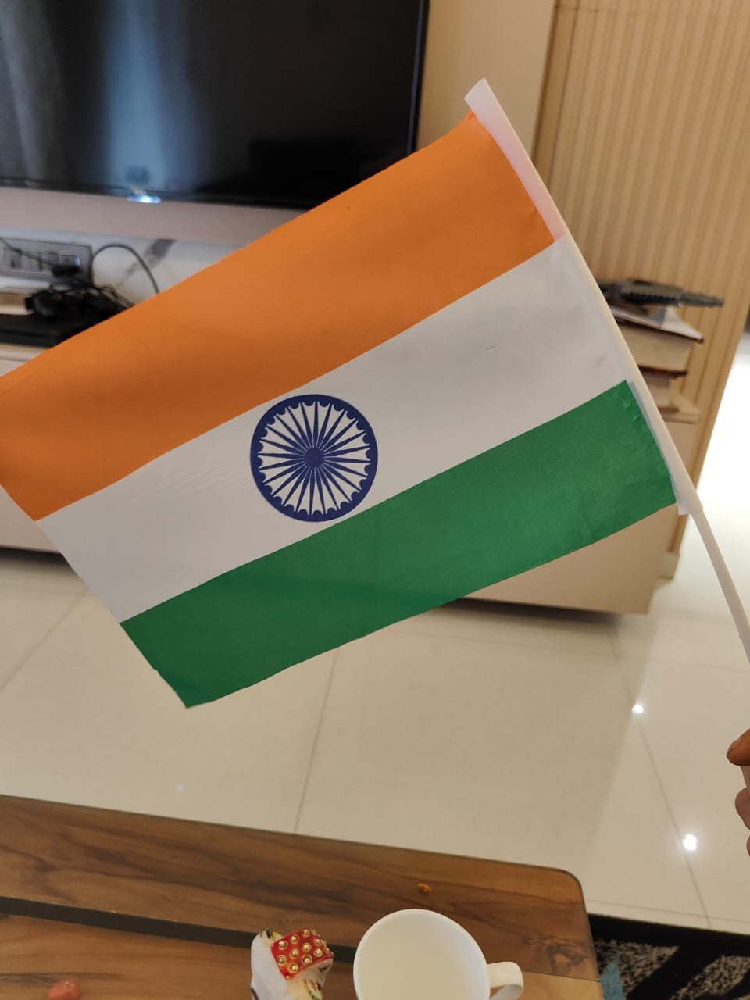
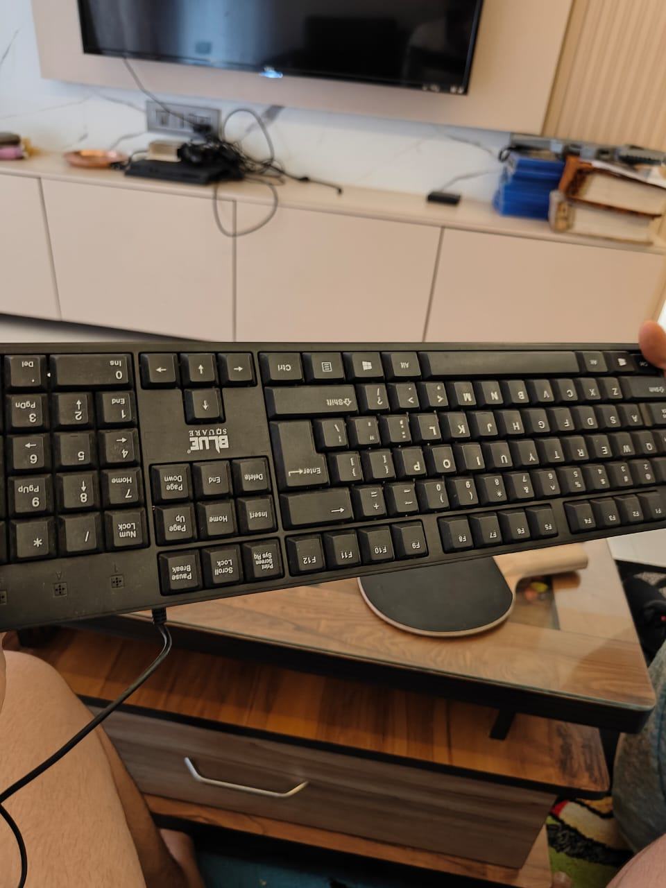
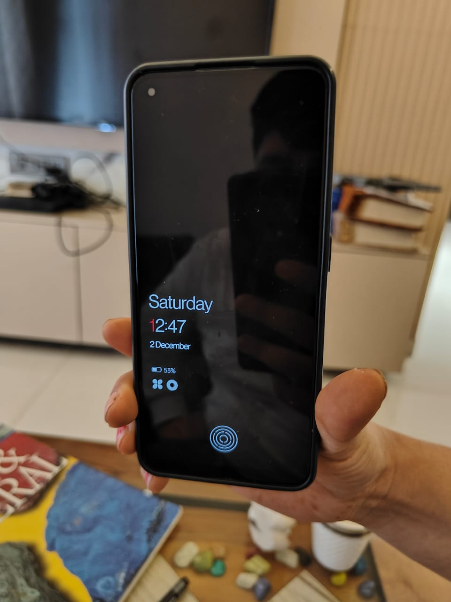
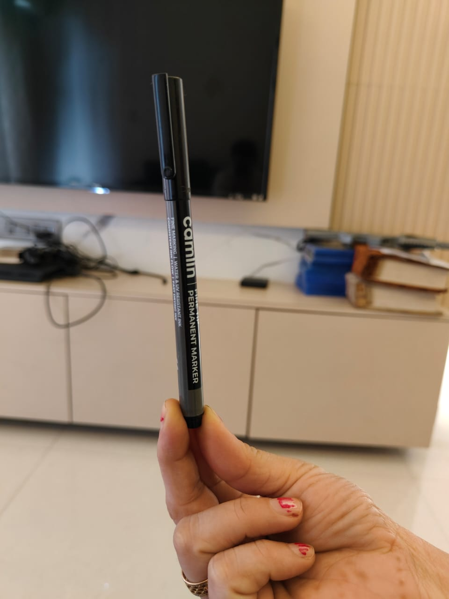
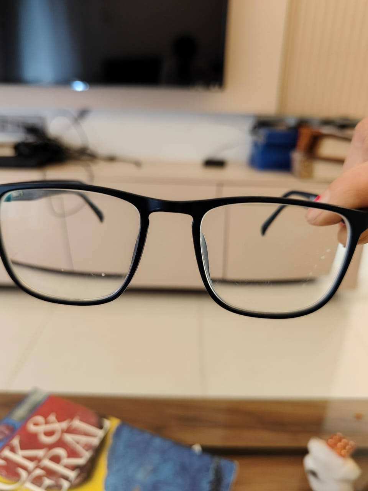
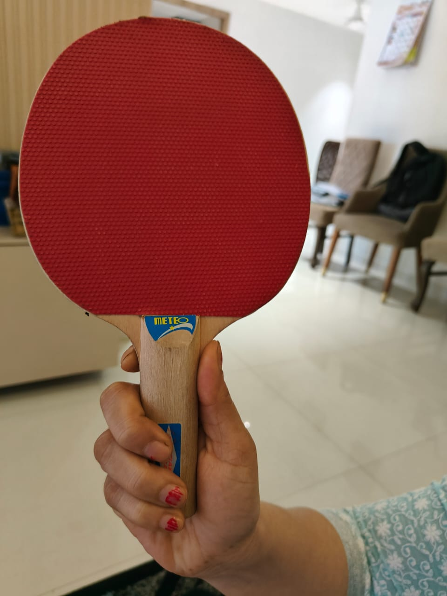

Test Image -

Output on GOOGLE LENS - tennis ball
Output on Mobilenet Model - Ball
Test Image -

Output on GOOGLE LENS - EYEWITNESS rock and mineral book
Output on Mobilenet Model - Book
Test Image -

Output on GOOGLE LENS - Tea cup
Output on Mobilenet Model - Cup
Test Image -

Output on GOOGLE LENS - Indian Flag
Output on Mobilenet Model - Flag
Test Image -

Output on GOOGLE LENS - Keyboard
Output on Mobilenet Model - Keyboard
Test Image -

Output on GOOGLE LENS - Oneplus nord CE 2
Output on Mobilenet Model - Phone
Test Image -

Output on GOOGLE LENS - Camlin CD/DVD marker
Output on Mobilenet Model - Pen
Test Image -

Output on GOOGLE LENS - Spectacles
Output on Mobilenet Model - spectacles
Test Image -

Output on GOOGLE LENS - Table tennis raquet
Output on Mobilenet Model - TT raquet
Result -
After conducting a thorough comparison of the two models by testing them on 9 different objects, I have come to a definitive conclusion regarding their performance. Google Lens has demonstrated a markedly higher level of accuracy compared to MobileNet. Throughout the testing process, Google Lens consistently provided precise and reliable identifications for a wide range of objects, whereas MobileNet's results were notably less accurate. This difference in performance underscores the advanced capabilities and superior accuracy of Google Lens in object recognition tasks.